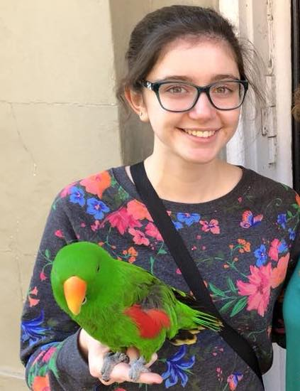

Hi there! I'm Denise.
ux designer • tea drinker • animal lover • people watcher • avid reader
I'm Denise, the creator of this website. I'm passionate about experience design, content strategy, and empathy for users above all. My mission as I gain more experience in design is to absorb as much knowledge as I can from as many human perspectives as possible in order to truly do some good with what I create.
Outside of school, my passion is animals. I love dogs a lot in particular, and I spent a lot of my free time volunteering at the Humane Society of Huron Valley. I am a firm supporter of the #adoptdontshop movement, because every dog in a shelter deserves a loving home.
